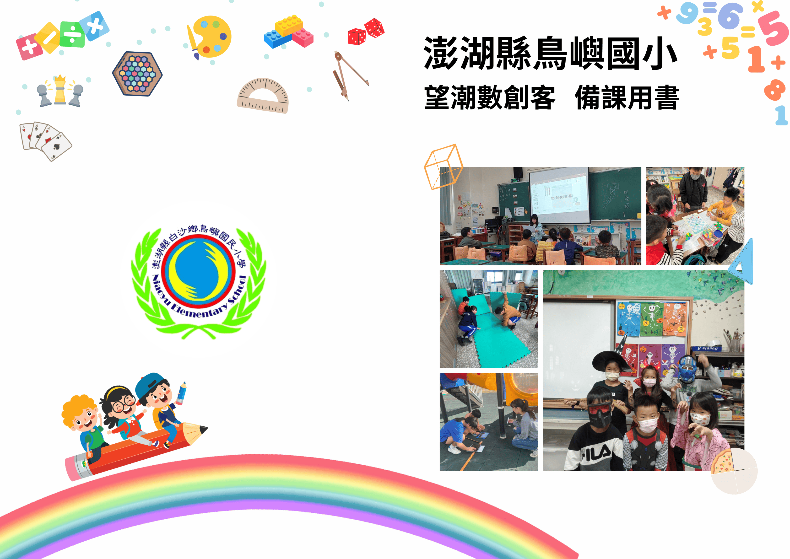
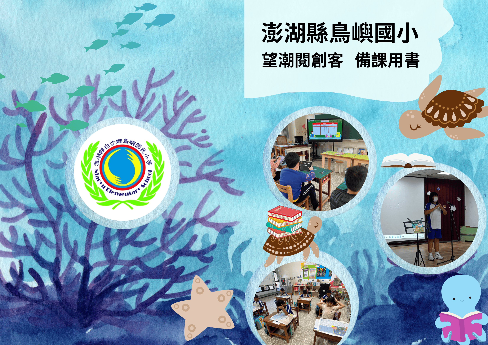

家鄉趣
透過實地踏查與在地環境的互動，引領學生深入探索家鄉的自然與人文脈絡，從中建立對生長土地的情感連結、認同感與在地關懷意識。

數創客
將數理邏輯與日常生活情境緊密結合，培養學生具備運算思維、資料分析與邏輯推理的素養，並能靈活運用數學工具來解決真實世界的問題。

閱創客
藉由深度閱讀與文本探討，培養學生理解、詮釋、反思與評鑑的進階閱讀素養，並激發創意思考與批判性觀點，奠定終身學習與自主閱讀的基礎。
寰嶼遊
從世界觀點出發，引導學生透過多元的跨文化探索與實作交流，培養具備國際視野、能理解並尊重多元文化的全球公民素養，同時深化團隊合作與溝通表達能力。
英創客
結合語言學習與生命經驗，引導學生進行自我探索與特質梳理，並透過創意的表達形式，展現獨特的個人故事，提升語言應用與溝通能力。